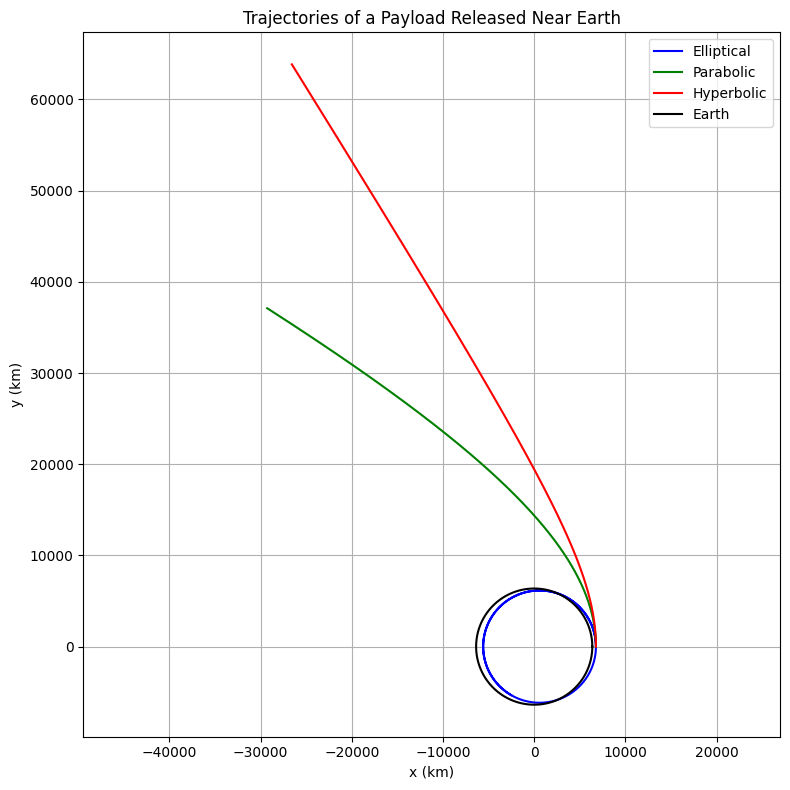

Problem 3
Step 1: Analyze Possible Trajectories
When a payload is released from a rocket near Earth, its future motion is determined by its speed, direction, and altitude. Depending on the specific energy \(\epsilon\) of the system, the resulting path can be classified as:
- Elliptical Trajectory (\(\epsilon < 0\)): Bound orbit, repeating paths (circular or oval).
- Parabolic Trajectory (\(\epsilon = 0\)): The minimum speed needed to escape Earth — marginal case.
- Hyperbolic Trajectory (\(\epsilon > 0\)): Payload escapes Earth with excess kinetic energy.
The specific mechanical energy (energy per unit mass) is:
Where: - \(v\) is the speed of the payload, - \(r\) is the radial distance from Earth’s center, - \(G\) is the gravitational constant, - \(M\) is the Earth's mass.
The expression comes from combining kinetic and gravitational potential energy:
- Kinetic energy per unit mass: \(\frac{1}{2}v^2\)
- Gravitational potential energy per unit mass: \(-\frac{GM}{r}\)
Hence:
This confirms: - \(\epsilon < 0\): Elliptical orbit (bound) - \(\epsilon = 0\): Parabolic escape - \(\epsilon > 0\): Hyperbolic escape
Formulas for Orbital Mechanics
Escape Velocity
The speed required to escape a celestial body's gravity from a distance \(r\):
Circular Orbital Velocity
The speed needed to maintain a circular orbit at radius \(r\):
Specific Mechanical Energy
The total energy per unit mass (kinetic + potential):
- \(E < 0\): Bound orbit (elliptical)
- \(E = 0\): Parabolic escape
- \(E > 0\): Hyperbolic escape
Gravitational Force Between Two Masses
Orbital Period (Kepler’s Third Law)
Applies to circular orbits:
\(\(T = 2\pi \sqrt{\frac{r^3}{GM}}\)\)
Step 2: Equations of Motion in 2D
From Newton’s Law of Gravitation:
Let \(\vec{r} = (x, y)\), then:
To solve numerically, define the state vector \([x, y, v_x, v_y]\) with:
Step 3: Python Code for Trajectory Simulation
import numpy as np
import matplotlib.pyplot as plt
from scipy.integrate import solve_ivp
# Constants
G = 6.67430e-11 # gravitational constant [m^3/kg/s^2]
M = 5.972e24 # mass of Earth [kg]
R = 6.371e6 # radius of Earth [m]
mu = G * M # gravitational parameter [m^3/s^2]
# Define system of ODEs
def dynamics(t, state):
x, y, vx, vy = state
r = np.sqrt(x**2 + y**2)
ax = -mu * x / r**3
ay = -mu * y / r**3
return [vx, vy, ax, ay]
# Initial position: 400 km above Earth's surface
x0 = R + 400000 # meters
y0 = 0
# Initial velocities for different trajectory types
v_values = [7300, 11180, 13000] # m/s: elliptical, parabolic, hyperbolic
labels = ['Elliptical', 'Parabolic', 'Hyperbolic']
colors = ['blue', 'green', 'red']
plt.figure(figsize=(8, 8))
for v0, label, color in zip(v_values, labels, colors):
vx0 = 0
vy0 = v0
state0 = [x0, y0, vx0, vy0]
t_span = (0, 8000)
t_eval = np.linspace(*t_span, 1000)
sol = solve_ivp(dynamics, t_span, state0, t_eval=t_eval, rtol=1e-9)
x, y = sol.y[0], sol.y[1]
plt.plot(x/1000, y/1000, label=label, color=color)
# Earth
theta = np.linspace(0, 2*np.pi, 300)
plt.plot((R * np.cos(theta))/1000, (R * np.sin(theta))/1000, 'k', label='Earth')
plt.xlabel('x (km)')
plt.ylabel('y (km)')
plt.title('Trajectories of a Payload Released Near Earth')
plt.axis('equal')
plt.grid(True)
plt.legend()
plt.tight_layout()
plt.show()

Step 4: Interpretation
- Elliptical: Captured orbit. Occurs when the initial speed is below escape velocity.
- Parabolic: Boundary case. Object escapes with zero final velocity.
- Hyperbolic: Object escapes with excess energy. Relevant for deep space missions.
These simulations reflect practical use cases in satellite deployment, space debris behavior, and interplanetary travel.
Summary
- Introduced energy-based classification of orbits.
- Derived motion equations for gravitational acceleration in 2D.
- Created a realistic simulation tool in Python to explore various escape conditions.
- Discussed relevance to orbital insertion and mission planning.